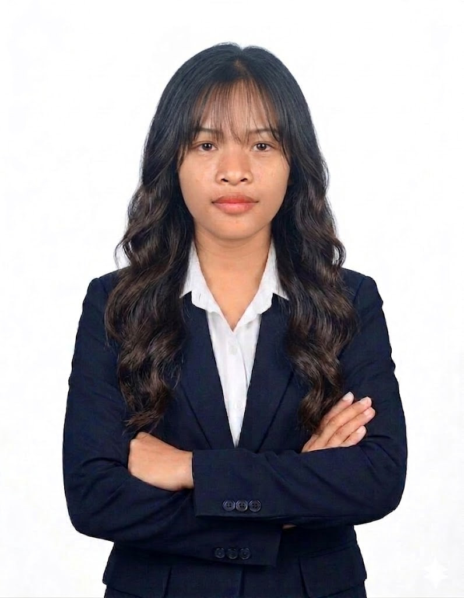

Web Development Student at Passerelles Numériques Cambodia (PNC)
I am a passionate and dedicated Web Development student at Passerelles Numériques Cambodia (PNC). I love turning ideas into beautiful, responsive, and user-friendly websites.
With a strong interest in both design and coding, I enjoy creating modern web experiences using HTML, CSS, JavaScript, and other modern technologies. I am constantly learning and improving my skills to become a professional Full-Stack Developer.
Associate's Degree in Web Development
2025 – Present
Graduated in 2024
I aim to become a professional Full-Stack Web Developer and AI Engineer, specializing in building scalable web applications, integrating AI solutions, and delivering exceptional user experiences.
